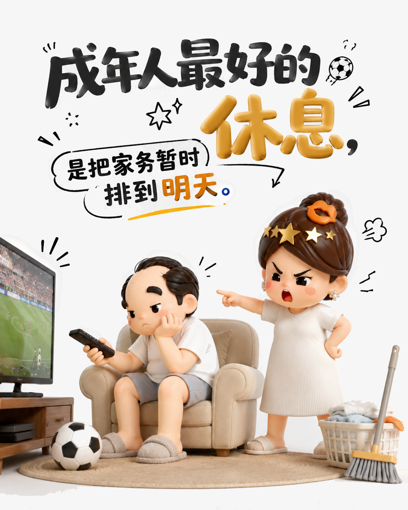
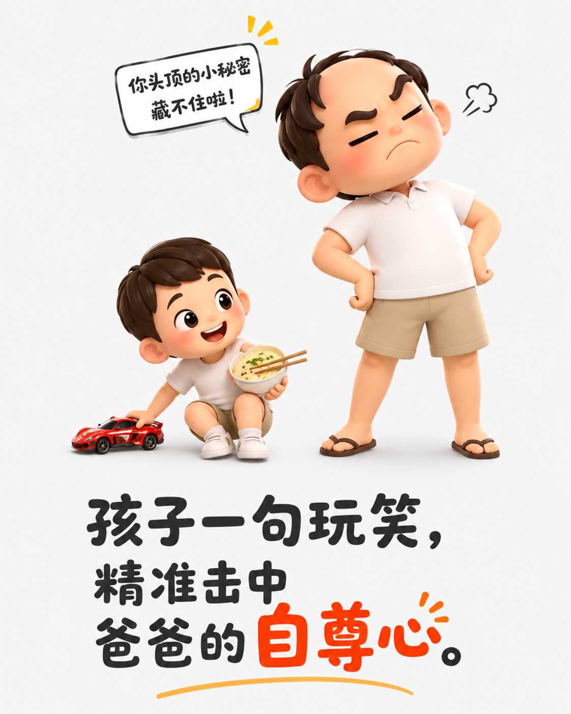
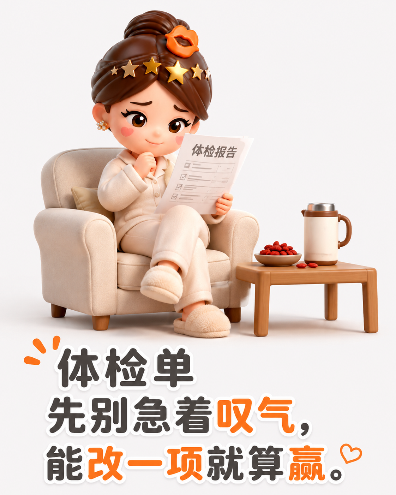
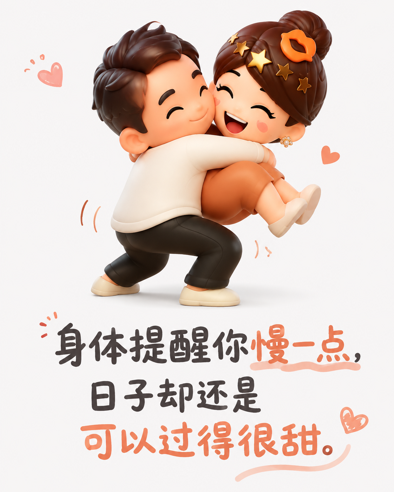

中年以后，嘴硬可以，身体别硬扛
先看体检单
体检单变红，先别吓自己。少喝一杯、早睡一晚，能改一项就是进步。嘴上说没事，行动别拖。

家人最会补刀
孩子一句玩笑，常比体重秤精准。中年人的体面，是被调侃后还能笑。

偷一点清静
钓鱼空手也算收获：在河边坐一天，暂时不被工作家务追赶，就是成年人的小确幸。

和生活讲和
少年心还在，身体会提醒你慢点。承认累，接受不完美，日子反而松快。

体检单变红，先别吓自己。少喝一杯、早睡一晚，能改一项就是进步。嘴上说没事，行动别拖。

孩子一句玩笑，常比体重秤精准。中年人的体面，是被调侃后还能笑。

钓鱼空手也算收获：在河边坐一天，暂时不被工作家务追赶，就是成年人的小确幸。

少年心还在，身体会提醒你慢点。承认累，接受不完美，日子反而松快。
